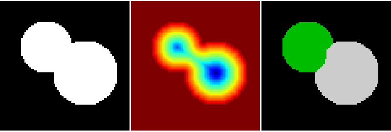

Watershed segmentation¶
The watershed is a classical algorithm used for segmentation, that is, for separating different objects in an image.
Starting from user-defined markers, the watershed algorithm treats pixels values as a local topography (elevation). The algorithm floods basins from the markers, until basins attributed to different markers meet on watershed lines. In many cases, markers are chosen as local minima of the image, from which basins are flooded.
In the example below, two overlapping circles are to be separated. To do so, one computes an image that is the distance to the background. The maxima of this distance (i.e., the minima of the opposite of the distance) are chosen as markers, and the flooding of basins from such markers separates the two circles along a watershed line.
See Wikipedia for more details on the algorithm.
import numpy as np
from scipy import ndimage
import matplotlib.pyplot as plt
from skimage.morphology import watershed, is_local_maximum
# Generate an initial image with two overlapping circles
x, y = np.indices((80, 80))
x1, y1, x2, y2 = 28, 28, 44, 52
r1, r2 = 16, 20
mask_circle1 = (x - x1)**2 + (y - y1)**2 < r1**2
mask_circle2 = (x - x2)**2 + (y - y2)**2 < r2**2
image = np.logical_or(mask_circle1, mask_circle2)
# Now we want to separate the two objects in image
# Generate the markers as local maxima of the distance to the background
from scipy import ndimage
distance = ndimage.distance_transform_edt(image)
local_maxi = is_local_maximum(distance, image, np.ones((3, 3)))
markers = ndimage.label(local_maxi)[0]
labels = watershed(-distance, markers, mask=image)
fig, axes = plt.subplots(ncols=3, figsize=(8, 2.7))
ax0, ax1, ax2 = axes
ax0.imshow(image, cmap=plt.cm.gray, interpolation='nearest')
ax1.imshow(-distance, cmap=plt.cm.jet, interpolation='nearest')
ax2.imshow(labels, cmap=plt.cm.spectral, interpolation='nearest')
for ax in axes:
ax.axis('off')
plt.subplots_adjust(hspace=0.01, wspace=0.01, top=1, bottom=0, left=0,
right=1)
plt.show()
Python source code: download (generated using skimage 0.6)